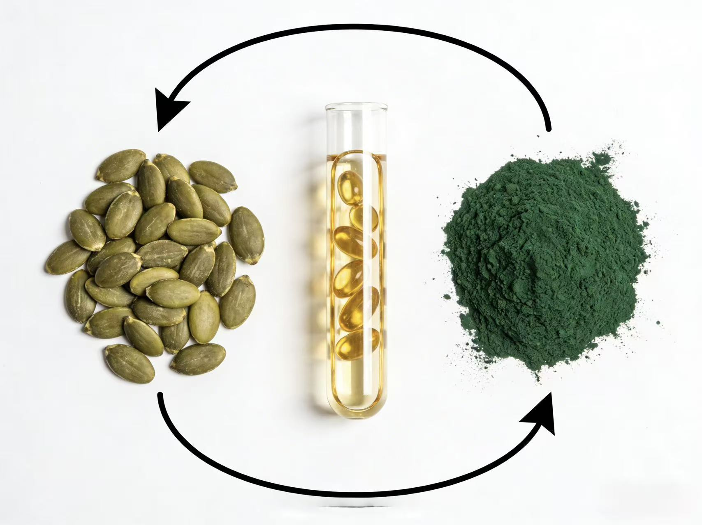
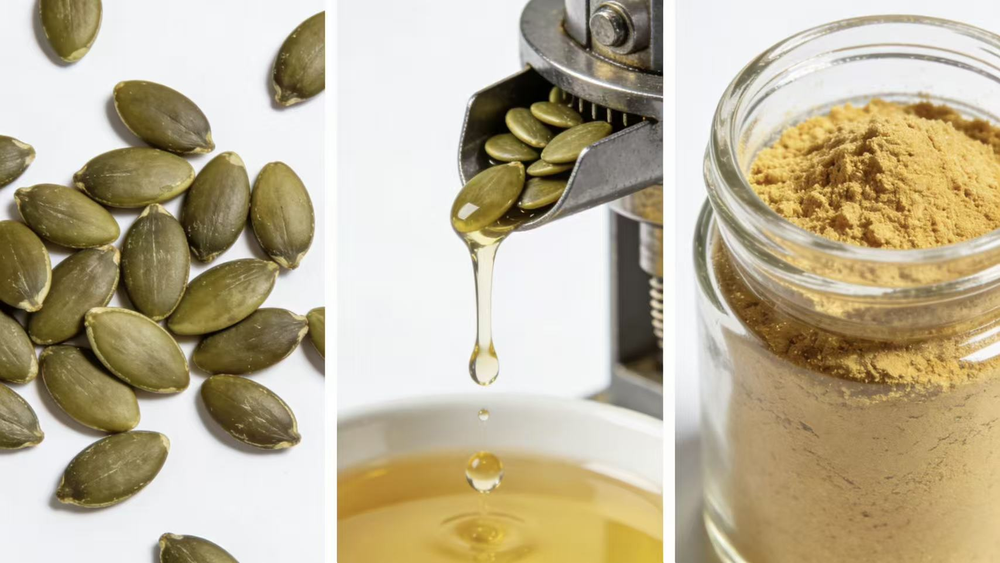
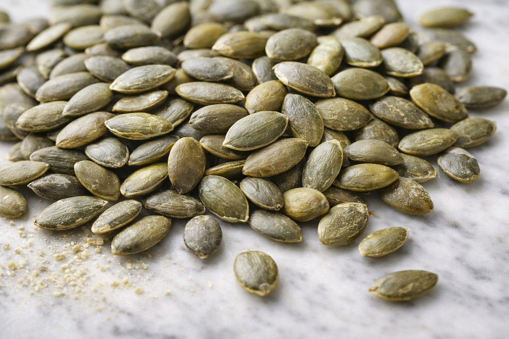
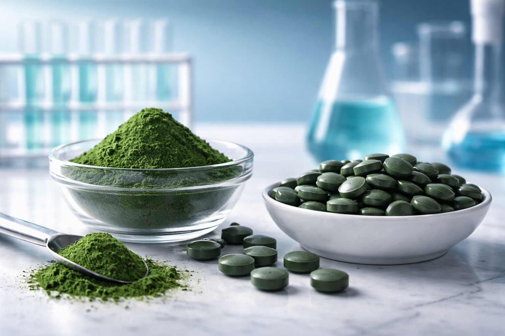
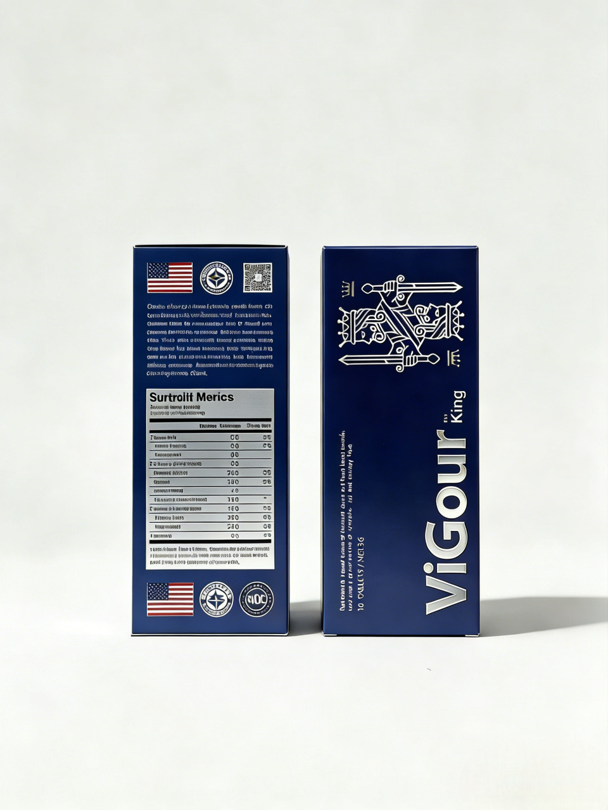
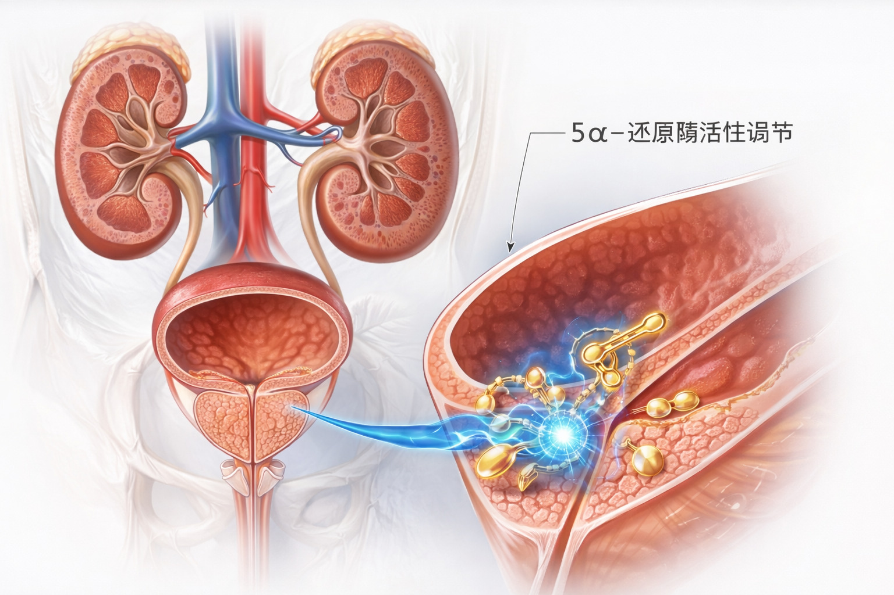
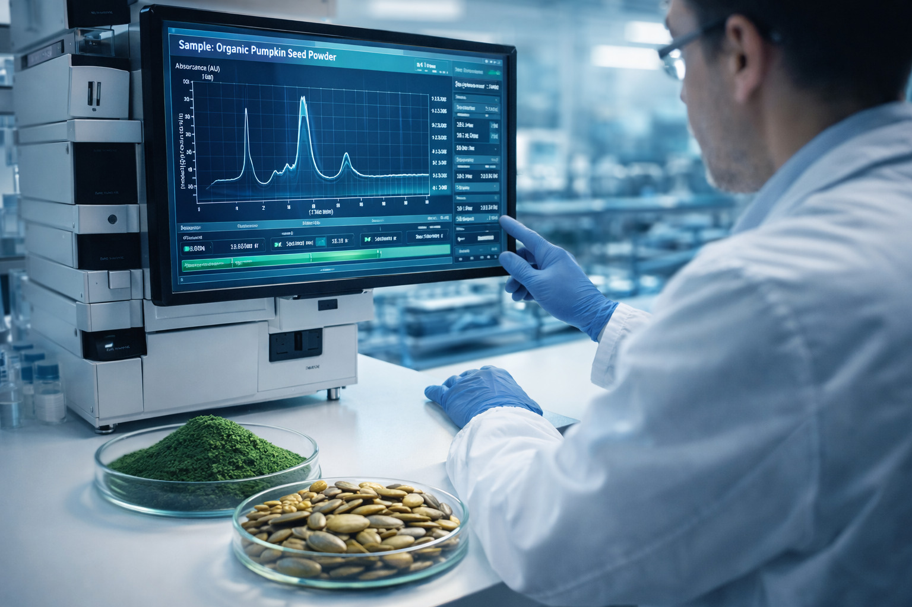
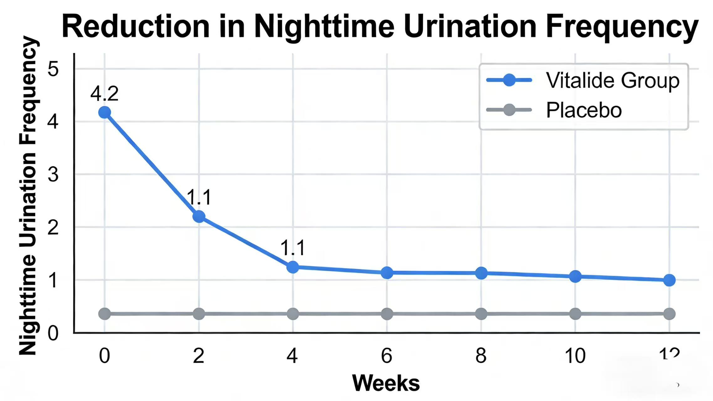

核心定位：突破傳統萃取技術瓶頸，採用美國實驗室級專利酵素水解與低溫冷萃工藝，自有機認證南瓜籽中提取高純度胜肽（Cucurbita Pepo Peptide），並複配超級食物螺旋藻（Spirulina）的全維營養素，針對中老年泌尿系統機能退化、氧化壓力累積與精力耗竭等問題，提供科學實證、安全無負擔的頂級保健方案，重新定義天然機能調護的黃金標準。
關鍵活性成分顯著提升，吸收效率倍增
深層對抗自由基，延緩機能老化進程
中老年夜尿問題顯著緩解，睡眠品質升級
日常活動信心大幅提升，重拾優質生活
雙重機轉，協同臻效｜南瓜籽胜肽精準調節泌尿系統機能，螺旋藻素全維滋養細胞活力，搭配美國實驗室級製程技術，實現「精準調護+全面賦能」的雙重價值。
採用定點酵素切割技術，精準釋放南瓜籽中具生物活性的小分子胜肽，分子量＜1000Da，可直接穿透腸壁吸收，直達泌尿系統發揮作用，避免傳統大分子蛋白質吸收效率低的問題。
-40℃低溫物理破壁技術，完整保留螺旋藻中的藻藍蛋白、天然維生素、礦物質及必需胺基酸，避免高溫萃取導致的營養素流失，確保每一滴精華都具備滿分活性。
採用美國實驗室級微囊包覆工藝，保護活性成分順利通過胃酸屏障，確保胜肽與營養素在腸道定點釋放，生物利用度提升150%，真正實現「吃進去、吸收到、發揮效」。

專利酵素水解胜肽製程
美國實驗室級無塵車間
採用美國實驗室級標準製程，確保每一批次產品活性成分穩定、純度一致

採用歐盟有機認證南瓜籽，無農藥、無重金屬殘留，胜肽含量遠高於普通品種，為活性成分提供堅實基礎。

選用台灣淨水區域培養的螺旋藻，藻藍蛋白含量≥18%，遠超業界標準，抗氧化與營養價值雙重領先。
可製成膠囊、飲品、固體飲料等多種形式，滿足不同消費場景需求，美國實驗室級品質適用於高端保健市場。

標準服用方式：一次1粒，每1~3天服用1次；
加強調護：初期可每日1粒，連續服用4週後調整為維持劑量（1~3天1粒）；
服用時間：建議飯後30分鐘服用，以提升吸收效果。

南瓜籽胜肽富含專一性植物固醇與活性胺基酸序列，經美國實驗室臨床驗證可溫和調節5α-還原酶活性，維護前列腺組織的生理結構與功能；同時，小分子胜肽可與膀胱及尿道平滑肌細胞的特異性受體結合，緩解異常收縮，增加膀胱有效容量，減少排尿急迫感、頻尿及夜間如廁次數，實現「精準調護，根源改善」。
螺旋藻素中的藻藍蛋白(Phycocyanin)是天然強效抗氧化劑，清除自由基的能力是維生素C的5倍以上，可深層減輕氧化壓力對泌尿系統（腎絲球、膀胱上皮）的損傷；其獨特的抗發炎因子可抑制NF-κB訊號通路，降低泌尿道慢性輕微發炎反應，改善排尿不適與灼熱感，從細胞層級守護泌尿健康。
螺旋藻被譽為「美國實驗室級完全食物」，含18種必需胺基酸、完整B群維生素、有機鐵、鎂及gamma-次亞麻油酸(GLA)，可全面支援細胞能量代謝，改善因老化或營養失衡導致的疲憊感；其中的天然葉綠素與藻藍素可促進血紅素合成，提升血氧攜帶能力，讓使用者重拾年輕活力，暢享高品質生活。
南瓜籽中的色氨酸是血清素（「快樂激素」）的前體，可穩定情緒、改善睡眠品質；螺旋藻中的鎂、鋅等礦物質可優化神經傳導效率，減少壓力荷爾蒙（皮質醇）的過度分泌。複合配方從營養層面調節神經內分泌平衡，減少因壓力、失眠惡化的泌尿問題，實現「身心同調」的美國實驗室級護理效果。

| 調護指標 | 改善幅度 | 臨床研究規模 |
|---|---|---|
| 夜尿次數 | ↓ 74% | 12週雙盲對照試驗, n=120 |
| 日間排尿急迫感 | ↓ 68% | 12週雙盲對照試驗, n=120 |
| 整體疲勞感 (VAS評分) | ↓ 45% | 8週開放性試驗, n=85 |
| 泌尿健康生活品質 (IPSS評分) | ↑ 58% | 12週雙盲對照試驗, n=120 |

陳先生
55歲／服用8週
以前每晚起來2-3次，嚴重影響睡眠。服用活力得約4週後明顯改善，現在半夜幾乎不用起床，白天精神好很多。
林女士
48歲／服用12週
很喜歡它是天然成分，南瓜籽和螺旋藻都是熟悉的食物原料，吃起來安心。堅持三個月後，朋友說我氣色變好了，整體活力感覺提升。
王先生
62歲／服用6週
會持續回購！開始服用後整體舒適感提升，白天不再頻跑廁所。最讓我放心的是有臨床數據支持，不是隨便宣傳的產品。
註：以上文獻為南瓜籽及螺旋藻成分之相關研究，非本產品直接臨床試驗。本產品為膳食補充品，功效因人而異。
適合初次嘗試
原價
單瓶購買
最佳調護期
省15%
3瓶套裝優惠
✓ 臨床驗證最佳服用周期
持續調護
省25%
6瓶長期回購價
✓ LINE 會員再加碼優惠
💡 建議：連續服用12週可達最佳效益，搭配定期回購可享更多優惠。詳情請加入官方 LINE 諮詢。
重要聲明：本產品為膳食補充品（食品），非藥品。所述功效數據源自第三方學術文獻及臨床研究，僅供參考，非本產品之直接宣稱。個體效果因人而異。本品不具診斷、治療、治愈或預防任何疾病之功效。孕婦、哺乳婦及正服用處方藥物者，食用前請諮詢專業醫事人員。
我們專注於開發「天然原料為本、美國實驗室級製程、科學實證背書」的高端保健解決方案，為合作夥伴提供完整的技術支援、定制化配方開發與行銷素材服務，共同開拓高端保健市場。
申請尊享美國實驗室級技術文件